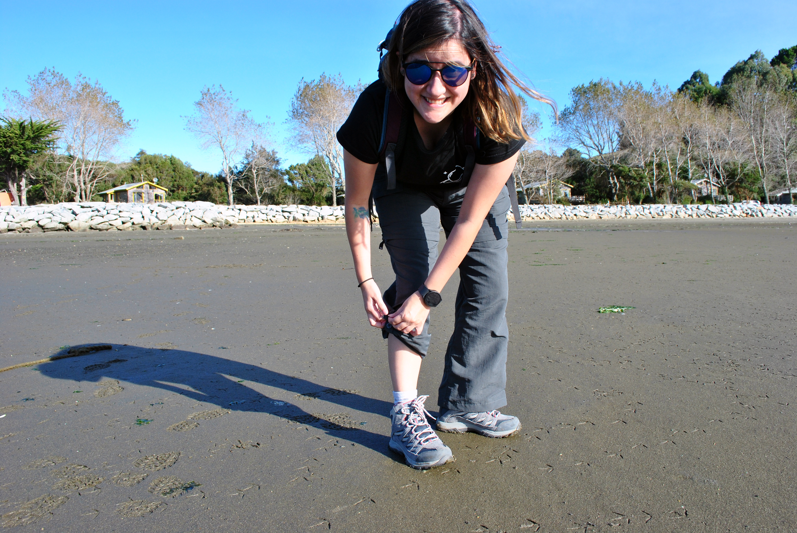

Positioning, pipeline, and the automations between them. I help B2B SaaS teams turn scattered marketing operations into systems that keep working.
Scattered tools. Manual handoffs. Processes that live inside one person's head and break the moment they're out. It works until it doesn't, and by then you've lost leads, hours, and momentum you can't get back.
I help you get the most out of your CRM, clean up the mess, and build the workflows and integrations that keep everything connected. When native integrations aren't enough, I go further with Zapier so your whole stack talks to itself. Fewer manual tasks, more time back.
I break down complex projects into tasks anyone can follow, communicate directly with internal teams and clients, and get ahead of problems before they cost you. I've led website migrations start to finish, on time and hitting every requirement, with quality checks on every asset.
Over 7 years across SEO, content, email, and paid. I write content that drives traffic, run email campaigns with strong CTRs, build landing pages, and design A/B tests that lift conversions. Plus PPC management that hits the ROI you're actually after.
"Valeria was a valuable part of our marketing department for 4 years. She made a positive impact on countless projects, most recently project managing the migration of hundreds of content pieces from our old HubSpot CMS to a new WordPress CMS for our website rebuild. She's also been very helpful across email, social media, content marketing, and design."
"For over 2 years Valeria proved herself as a reliable and conscientious marketing communications coordinator. She was an integral part of our team, assisting on a wide variety of activities: HubSpot management, social media, and project management. Her dedication and efficiency were appreciated by the entire team. I'd gladly recommend her to any fast-paced marketing team that wants work done right."

I started 10 years ago as an editorial designer, and since then I've worked across video editing, product marketing, content strategy, and project management. That mix taught me to see the whole picture, not just one channel.
My curiosity keeps pulling me into new things. I love exploring what I can do with AI and how far I can push HubSpot. I'm learning Japanese. I'm into working out, so I built myself a little app with Claude to track my progress.
I'm also a big fan of Barça, my two cats, my plants, and analog photography.
let's talk.